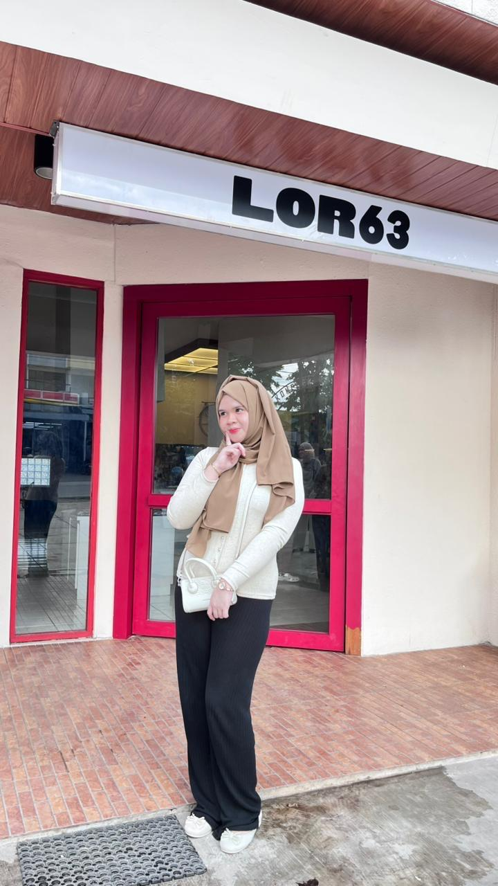
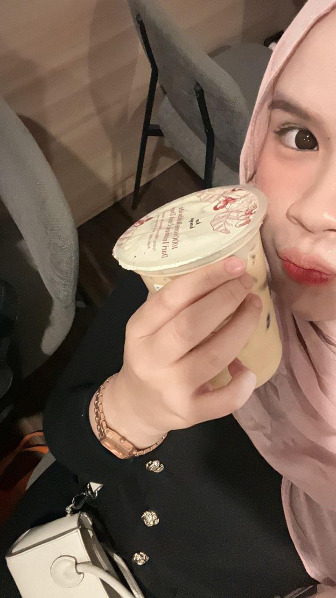
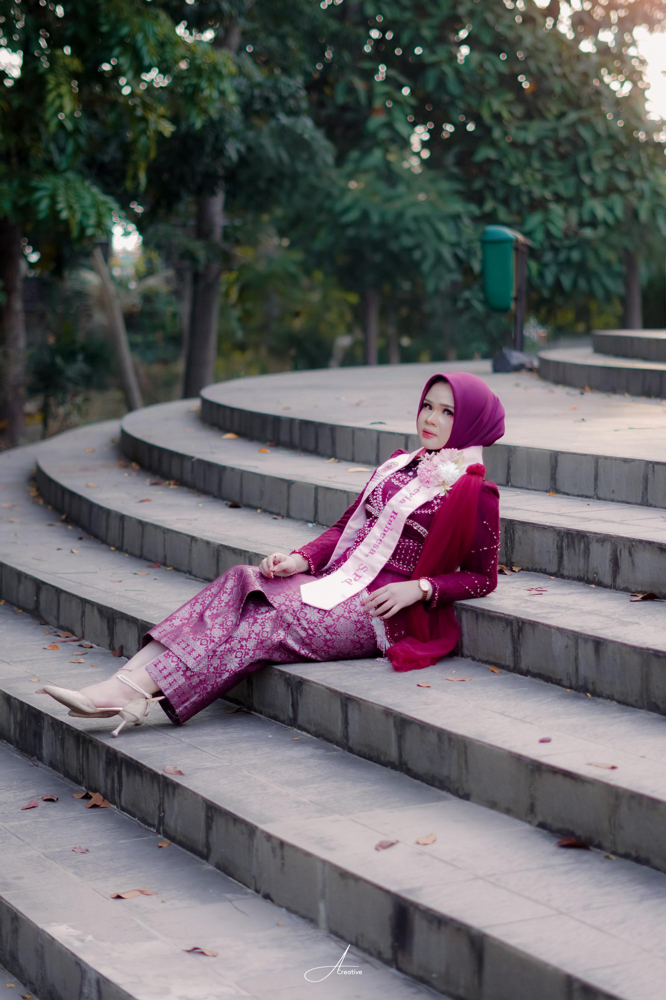
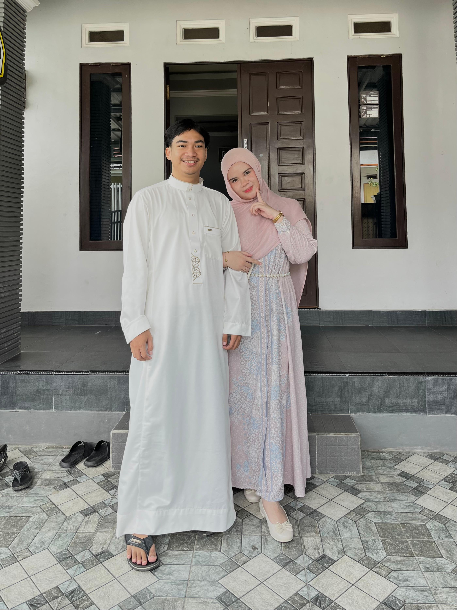
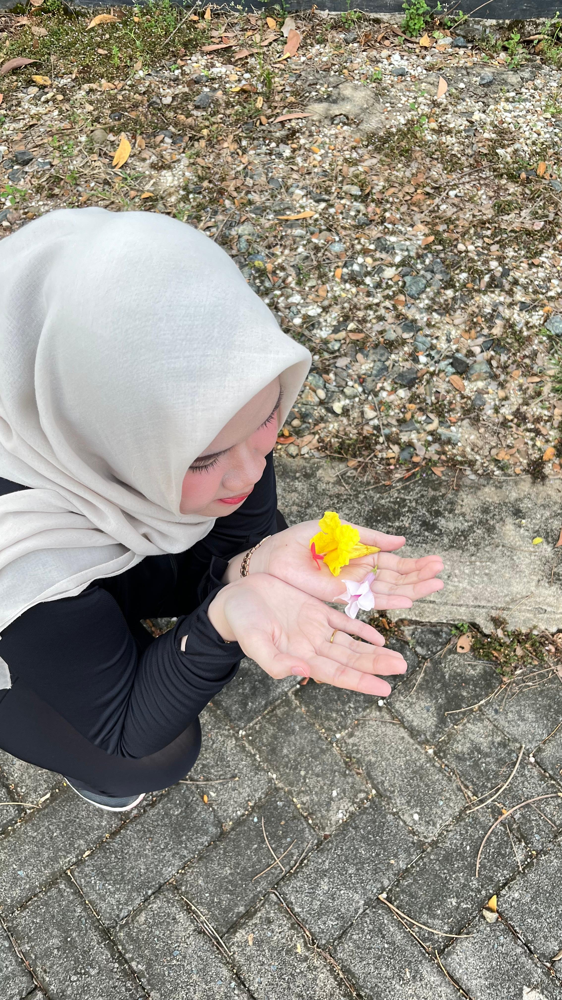
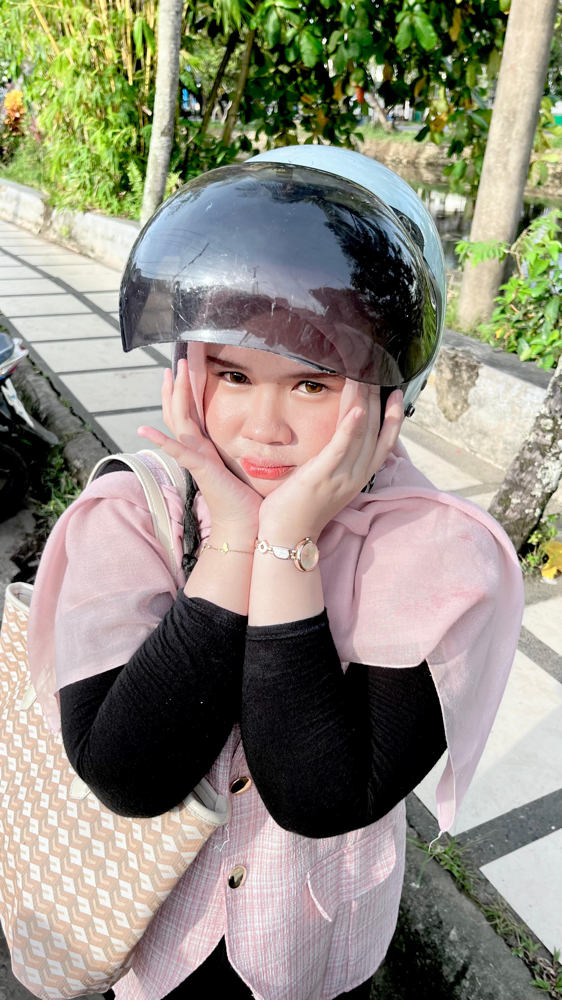
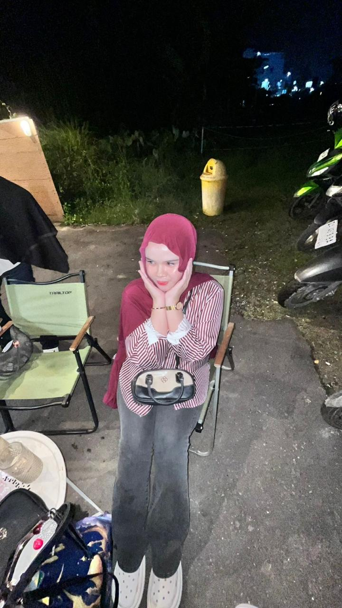

Happy Birthday, Sayangg
Levia Raheesa
Untaian Doa & Cinta
Untuk Sayangg yang Paling Istimewa
Selamat ulang tahun, sayangg. Di hari yang sangat istimewa ini, aku cuma mau bilang betapa bersyukurnya aku memiliki sayangg di dalam hidupku. Terima kasih sudah menjadi rumah paling nyaman, tempatku berbagi cerita, tawa, dan segala rasa.
Setiap hari bersama sayangg selalu terasa berarti. Di usia yang baru ini, aku berdoa semoga semua impian dan hal-hal baik yang sedang sayangg perjuangkan dimudahkan jalannya, kesehatan dan kebahagiaan selalu memeluk sayangg erat, serta senyum manis sayangg tidak pernah pudar.
Tetaplah menjadi sayangg yang lembut, ceria, dan selalu membuatku jatuh cinta setiap hari. Aku akan selalu ada di samping sayangg, menemani dan mendukung setiap langkah ke depan. Selamat merayakan hari lahir sayangg, cintaku!
Dengan segenap cinta & doa,
Fajar
Sweet Moments
Potret & Cerita Kita
Geser otomatis • Ketuk foto mana saja untuk memperbesar







Our Gallery
Album Kenangan (10 Foto)
Tampilan penuh sesuai rasio asli foto
❀ Senyum favoritku
❀ Momen manis kita
❀ Cantiknya sayangg
❀ Hari terindah bersama sayangg
❀ Tawa yang selalu kurindu
❀ Cerita cinta kita
❀ Manisnya hari ini
❀ Sayangg yang selalu istimewa
❀ Bahagia terus ya, sayangg
❀ Selamanya bersama sayangg
Birthday Wish
Make a Wish, Sayangg
Pejamkan mata, bisikkan harapan terbaik sayangg dalam hati, lalu tiup lilinnya ya